Amumu
The Sad Mummy

tank
“Solitude can be lonelier than death.”
Legend claims that Amumu is a lonely and melancholy soul from ancient Shurima, roaming the world in search of a friend. Doomed by an ancient curse to remain alone forever, his touch is death, his affection ruin. Those who claim to have seen him describe a living cadaver, small in stature and wrapped in creeping bandages. Amumu has inspired myths, songs, and folklore told and retold for generations—such that it is impossible to separate truth from fiction.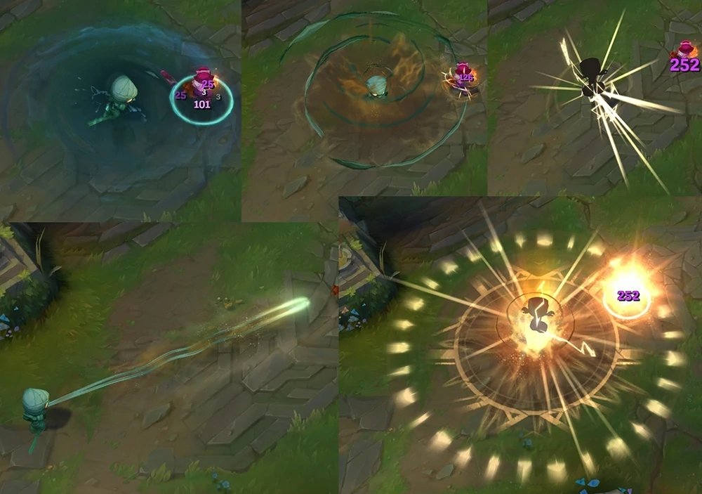
Abilities


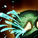

CURSED TOUCH (Passive)
Amumu's basic attacks Curse his enemies, causing them to take bonus true damage from incoming magic damage.BANDAGE TOSS (Q)
Amumu tosses a sticky bandage at a target, stunning and damaging the target while he pulls himself to them.DESPAIR (W)
Overcome by anguish, nearby enemies lose a percentage of their maximum Health each second and have their Curses refreshed.TANTRUM (E)
Permanently reduces the physical damage Amumu would take. Amumu can unleash his rage, dealing damage to surrounding enemies. Each time Amumu is hit, the cooldown on Tantrum is reduced by 0.5 seconds.CURSE OF THE SAD MUMMY (R)
Amumu entangles surrounding enemy units in bandages, applying his Curse, damaging and stunning them.
CURSED TOUCH (Passive)
Amumu's basic attacks Curse his enemies, causing them to take bonus true damage from incoming magic damage.
BANDAGE TOSS (Q)
Amumu tosses a sticky bandage at a target, stunning and damaging the target while he pulls himself to them.DESPAIR (W)
Overcome by anguish, nearby enemies lose a percentage of their maximum Health each second and have their Curses refreshed.TANTRUM (E)
Permanently reduces the physical damage Amumu would take. Amumu can unleash his rage, dealing damage to surrounding enemies. Each time Amumu is hit, the cooldown on Tantrum is reduced by 0.5 seconds.
CURSE OF THE SAD MUMMY (R)
Amumu entangles surrounding enemy units in bandages, applying his Curse, damaging and stunning them.Available Skins
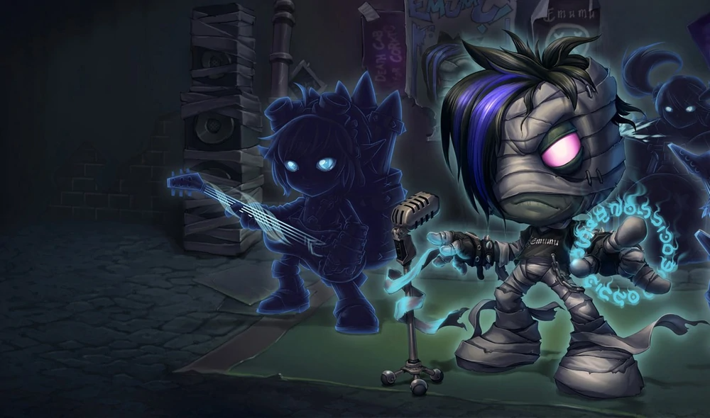
Emumu
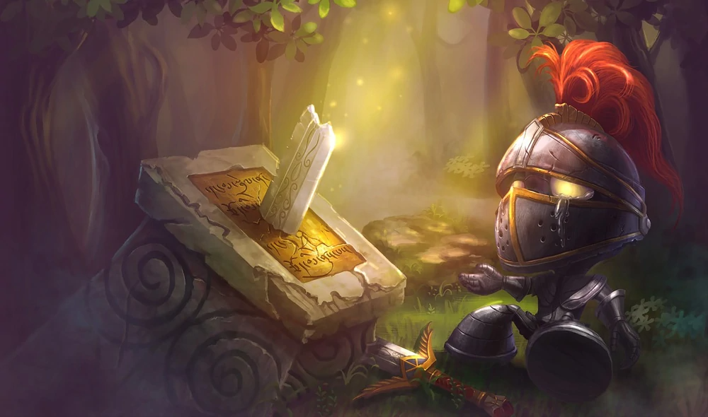
Little Knight Amumu
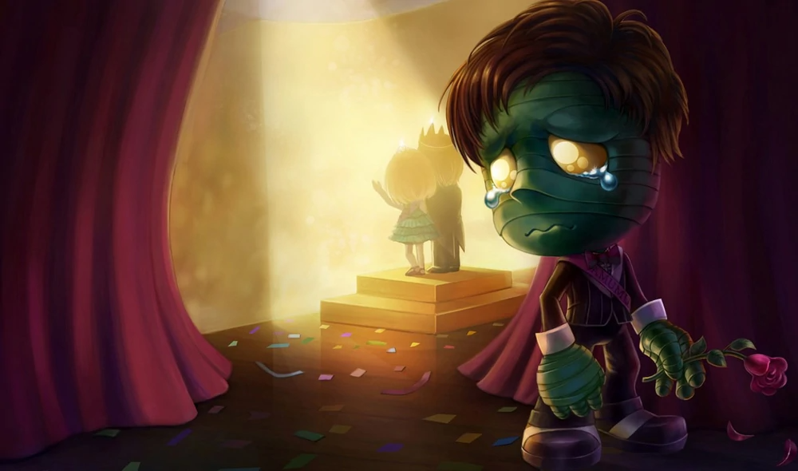
Almost-Prom King Amumu
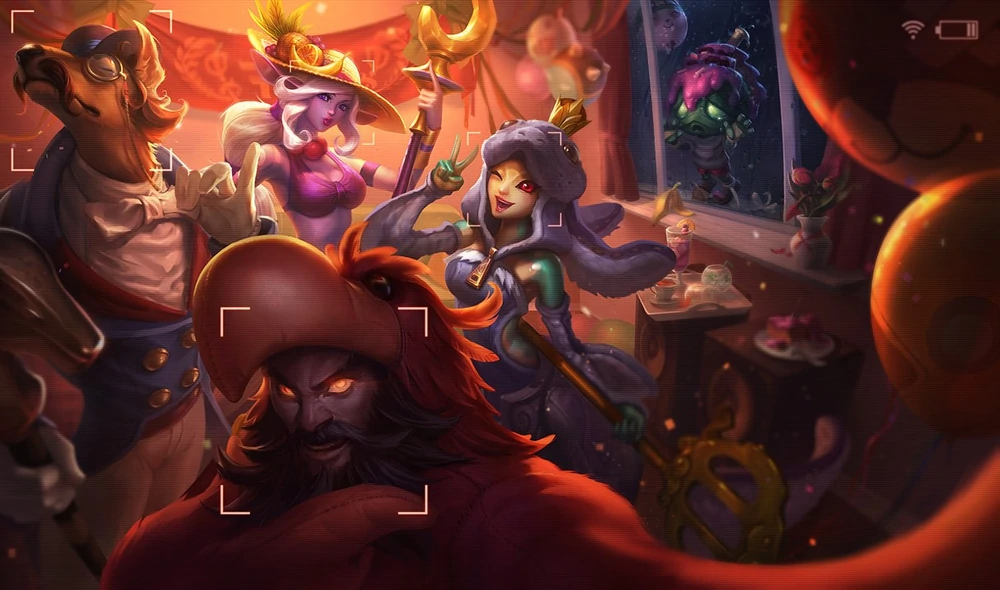
Surprise Party Amumu
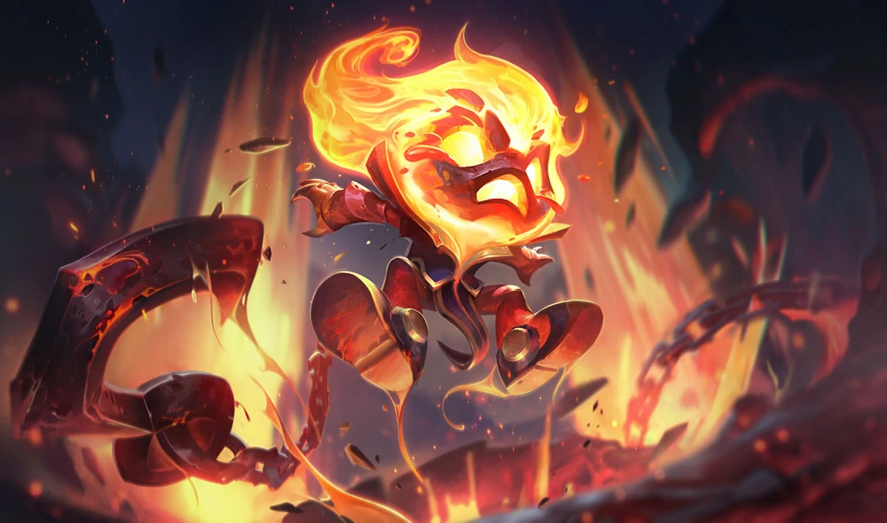
Infernal Amumu
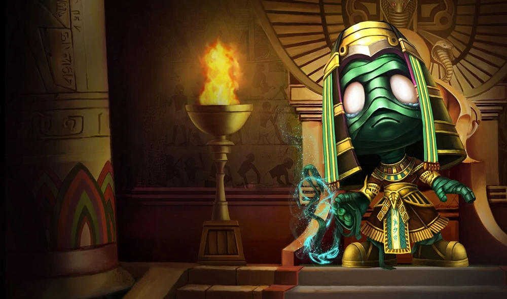
Pharaoh Amumu
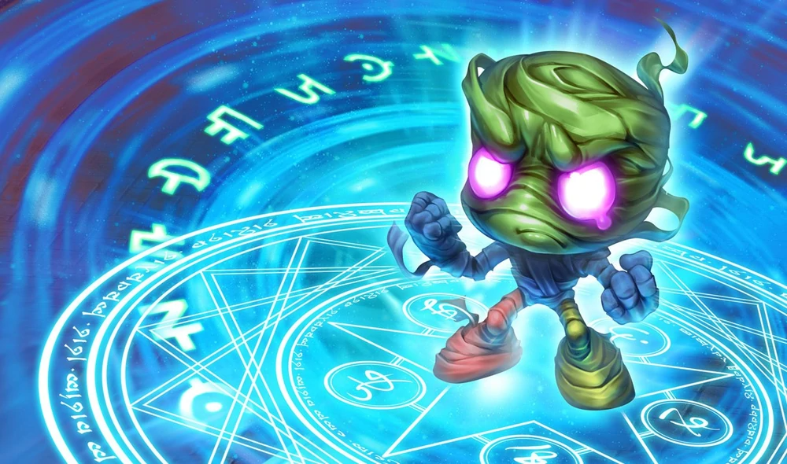
Vancouver Amumu
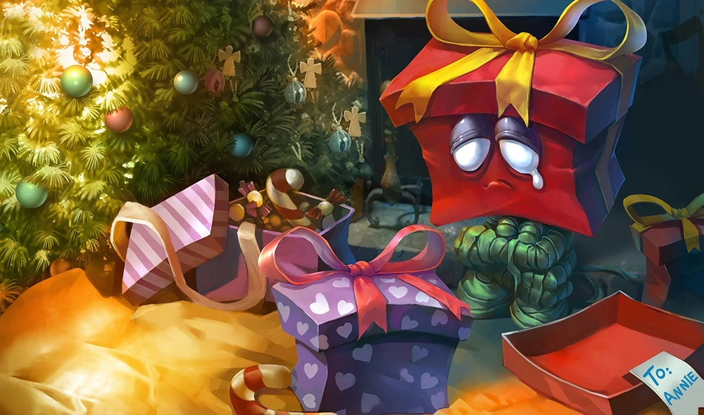
Re-Gifted Amumu
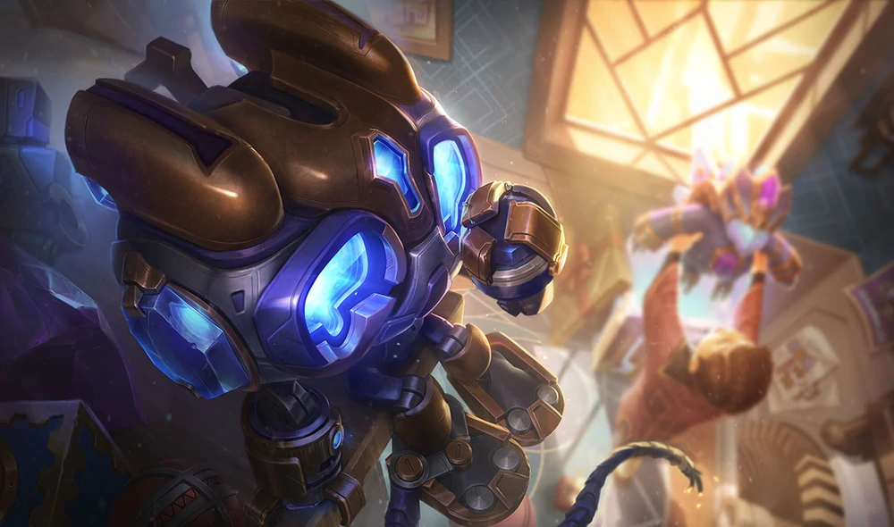
Hextech Amumu
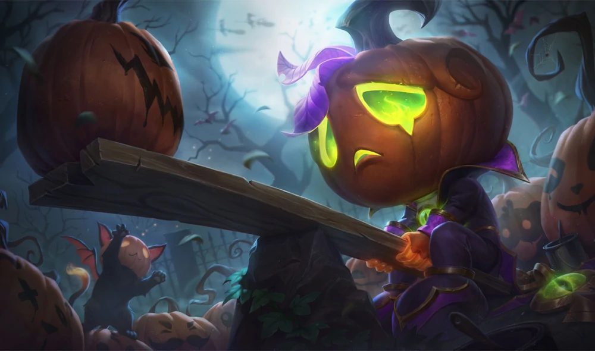
Pumpkin Prince Amumu